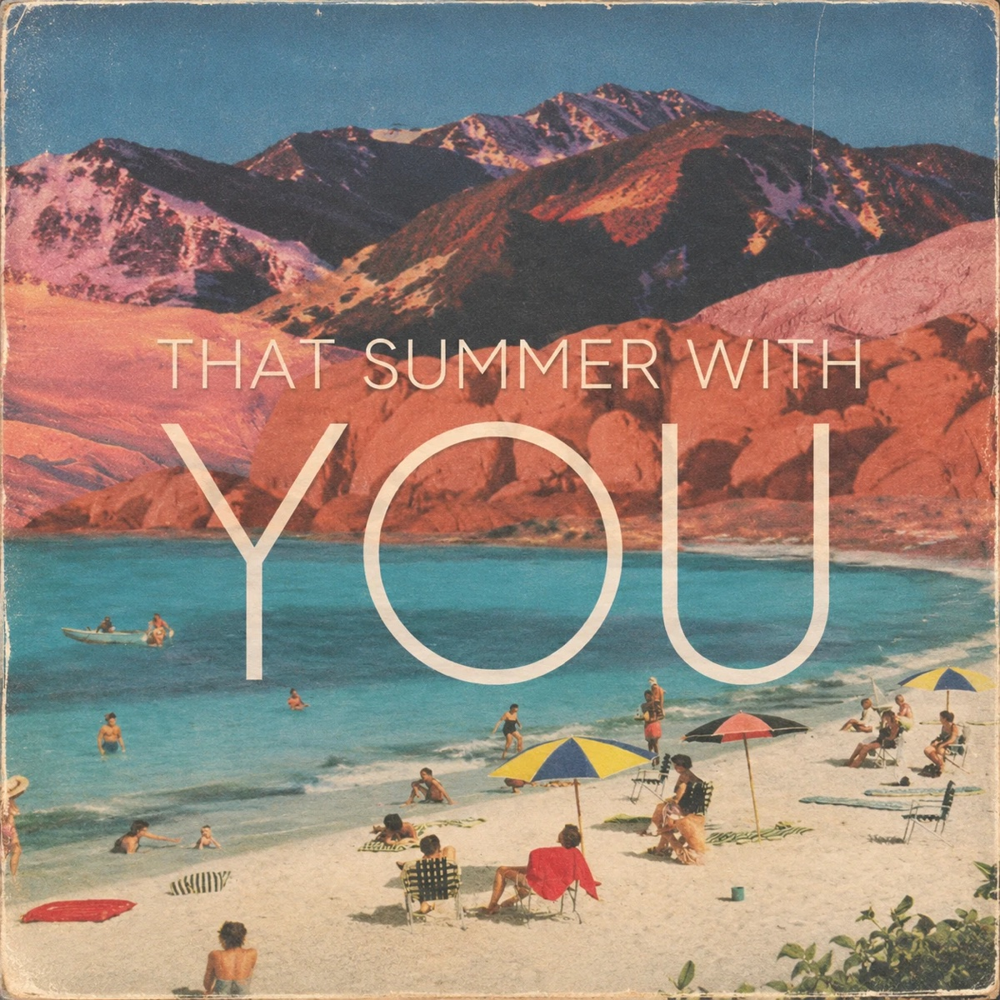

01 · Guitarist · Producer
박지은(MyMars)
뛰는 심장을 주체하지 못해 언제나 저 먼 곳을 여행하고 있는 마이마르스. 매일매일 화성을 그리워해서 붉은 별이 뜨는 가을 밤이 제일 좋은 기타리스트.
01 · Guitarist · Producer
뛰는 심장을 주체하지 못해 언제나 저 먼 곳을 여행하고 있는 마이마르스. 매일매일 화성을 그리워해서 붉은 별이 뜨는 가을 밤이 제일 좋은 기타리스트.

02 · Character Artist Group
곡 쓰고 노래하는 괴짜 지구인 과카(Guaca)와 글 쓰고 그림 그리는 외계 야옹이 몰리(Molly) 두 캐릭터로 이루어진 아티스트 그룹.


04 · Singer-songwriter · Storyteller
북촌 계동길에서 사람과 공간의 이야기를 기록해 온 문화기획자.
“노래 한 곡으로 안부를 묻습니다.”